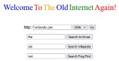

Wilby A search engine that only indexes simple, Web 1.0-style pages.
Wilby A search engine that only indexes simple, Web 1.0-style pages.
The Old Net A resource to access the wayback machine on a low-resource page. Ideal for any real web browsing on limited hardware. There are several other fun things to do on this web site.
 Really Slick Links Page A great resource for some really fun links to explore. One of those is the webmaster Terry's personal page, from whom I got the inspiration to convert my homepage to the state it's in today. Lots of great screensaver's he's built on this website as well. Check them out!
Really Slick Links Page A great resource for some really fun links to explore. One of those is the webmaster Terry's personal page, from whom I got the inspiration to convert my homepage to the state it's in today. Lots of great screensaver's he's built on this website as well. Check them out!
Quad9 A privacy-focused DNS server. Quad9 includes malware protection, HTTPS for DNS, and IPv6. I highly reccomend switching your DNS to it.